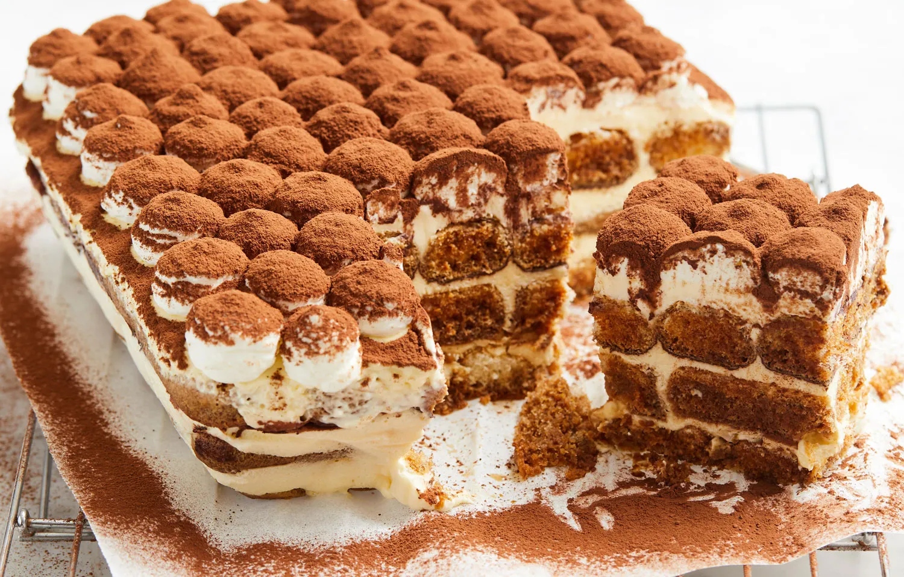

Tiramisu

Description
Tiramisu is a coffee-flavored Italian dessert. It is made of savoiardi dipped in coffee,
layered with a whipped mixture of eggs, sugar, and mascarpone cheese, flavoured with cocoa.
Its origins are disputed among Italian regions Veneto and Friuli Venezia Giulia. *Description from
Wikipedia.
Ingredients
- Espresso Powder
- Ladyfingers - Crisp Italian biscuits not the human kind!
- Mascarpone
- Eggs
- Sugar
- Spiced Rum
- Water
- Cocoa Powder
Steps
Prepare mascarpone mixture.
In a mixing bowl, whisk 3 egg whites until stiff peaks form. Set aside. In a separate mixing bowl, whisk egg yolks and sugar until thick and pale yellow. This takes about 5 minutes with a hand mixer on medium-high speed. Add the mascarpone and whisk until smooth and combined, about 1 to 2 minutes. When you are done mixing, the mascarpone cream should be smooth and creamy, but not airy like whipped cream. Gently and slowly fold egg whites into the mascarpone mixture, careful to maintain their fluffy texture.Prepare espresso and rum mixture.
Next, add espresso powder and water in a medium shallow bowl and stir to combine. Then add the rum to the coffee mixture.Layer ladyfingers and mascarpone.
Quickly dip each ladyfinger into the coffee, wetting both sides of cookie, but not soaking. Arrange ladyfingers along the base of a shallow 8”x8” baking dish. How many ladyfingers you need depends on the size of the ladyfingers as well as the dish used. Spread 1/3 of mascarpone mixture evenly on top, sprinkle with 1/3 of cocoa powder. Repeat the process of dipping the ladyfingers, arranging them in the casserole, and spreading mascarpone and cocoa powder on top two more times.Chill and serve.
Wrap tiramisù with plastic wrap and chill in the refrigerator at least 6 hours before serving. If you want to get fancy, finish the Tiramisù with a layer of whipped cream piped on top and dust with more cocoa powder.
Recipe from this website.